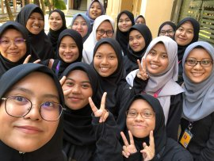

Contribution Achievement
Volunteering
I love to participate in any events as a volunteer.
There are several events that I have been participate as
a volunteer during that events.During my Diploma,
I already participated in many events such as
"Gotong-Royong di Rumah Asuhan Orang-ornag Kurang Upaya",
"Gotong-Royong dan Beramah Mesra di Perkampungan Orang-Orang Asli",
"Satu Murid Satu Sukan di Sekolah Kebangsaan Haji Omar Tahir" and others.
University's Project
 Next, I also always participate in all my university's project
such as my individual and group assignment, any tournament that organised
by the unversity or private organisation. I always give my best in
complete all the task that was given to me, and I also always make sure
the result is excellent eventhough in a short period to settle it.
Leadership's Program

Furthermore, I also join the leadership's program during my studies.
Through the leadership's program, it can inspiring and motivating individuals
that joined the program. Next, it coaching and developing the potential of others.
Identifying future needs and opportunities for others also one of the benefits of leadership's program.
And lastly, the benefit of join leadership's program is being open to new ideas and experiences.